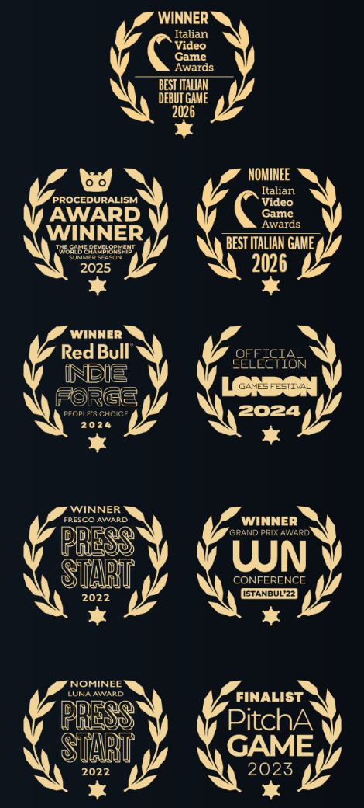
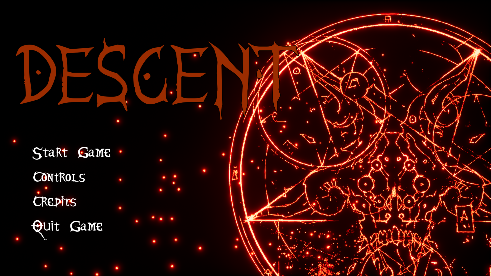
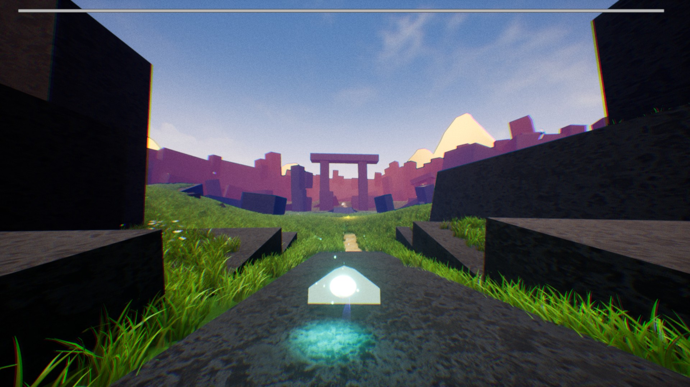
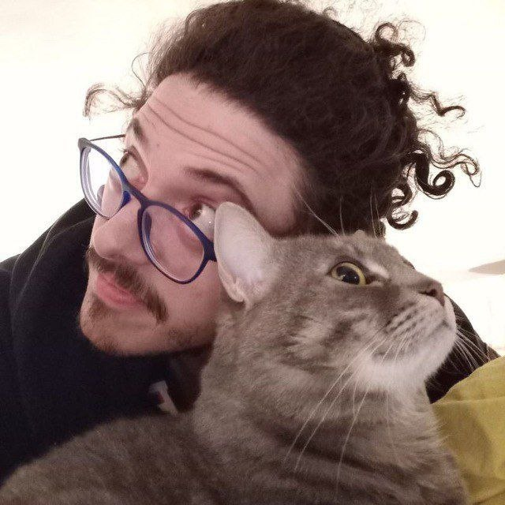

Progetto spazi che raccontano storie.
I am a Level Designer with a background in the indie game industry and as a level design lecturer.
My passion lies in crafting immersive levels and engaging encounters where players can experience satisfying and memorable gameplay.
Dino Path Trail
A roguelike survival in a prehistoric west
Dino Path Trail is an isometric, procedural survival roguelike set in a ruthless, prehistoric Wild West where dinosaurs never went extinct.
Players must venture across procedurally generated maps, from scorching deserts to haunted swamps, to rescue their kidnapped sister.
The core gameplay revolves around tense ranged firefights against bandits and dinosaurs, meticulous resource management,
and upgrading a mobile base camp that follows the player's journey.

Other projects

Descent
Avoid the demons and try to escape this hellish mansion. Beware of the corrupting powers that will try to seduce you. Do you dare to accept their... gift?
Explore
Shard Rush
Explore an abandoned planet as a non-anthropomorphic character. Reach the exit in your own way, gather keys wandering and enjoying the view.
ExploreAbout Me

Level Designer & Lecturer with a background in Indie development, QA testing, and a love for Action-RPGs.
I am a Level Designer with a passion for RPGs and Action-Adventure games. I have experience in Indie game development and as a Level Design Instructor. My journey started as a gamer, then as a student, and ultimately as a developer.
I’ve also worked in QA & Testing both inside and outside the gaming industry. Across all my roles, I strongly value team communication and the ability to give and receive constructive feedback.
My hobbies:
Certifications
- 3 years Course of Game and Level Design at Italian Videogames Academy
- Lazio Region Certified Computer Programmer
Contacts
Feel free to contact me here:
Dino Path Trail
About Dino Path Trail
Dino Path Trail è un gioco incentrato sulla sopravvivenza in un ambiente popolato da creature preistoriche. Lo scopo del mio lavoro è stato strutturare le mappe in modo da alternare "zone di massima tensione" (colli di bottiglia e terreni aperti esposti) a "safe zones" (caverne, canali rialzati). La gestione visiva guida costantemente il giocatore ad individuare punti di vantaggio per anticipare le rotte dei dinosauri.
Gameplay Trailer
Documentazione e Sviluppo di Livello
Esplora gli schemi, i bubble diagram e i blockout preparatori utilizzati durante la produzione.
Bubble Diagram & Flussi
Schema concettuale delle connessioni e dell'andamento emotivo del giocatore durante il primo atto.
Blockout Iniziale (3D)
Primo prototipo geometrico del livello per calibrare i tempi di corsa e le portate di salto.
Mappa del Flusso Navigazionale
Analisi visiva e percorsi alternativi legati ai comportamenti d'intelligenza artificiale dei predatori.
Final Art Pass
Applicazione del fogliame e delle texture rispettando rigorosamente le collisioni del blockout.
Descent
About Descent
Descent is a game focused on a metroidvania style map and stealth features.
Trailer
Documentation and Analysis
Rassegna delle metodologie geometriche e del controllo dell'illuminazione applicati al gioco.
Competitor Research
Open PDF ↗An analysis on the level design and items placement of Hollow Knight.
Competitor Research
Open PDF ↗An analysis on the level design and items placement of Hollow Knight.
Competitor Research
Open PDF ↗An analysis on the level and enemy design of Shadow Tactics:BOTS.
Shard Rush
Explore an abandoned planet as a non-anthropomorphic character, trying to retrieve the “keys” that will allow you to escape from the portal in the center of the map. Reach the exit in your own way, spending as much time as you want wandering and enjoying the view.
Trailer Competitivo
Documentazione e Sviluppo di Livello
Strutturazione degli spawn e linee di vista competitive.
Algoritmo Spawn e Sightlines
Analisi delle posizioni di rientro per prevenire lo spawn-kill nelle partite di livello e-sportivo.
Layout a Tre Corsie (3-Lane)
La scomposizione geometrica della mappa con percorsi di raccordo orizzontali ad alto rischio.
Zone Verticali di Vantaggio
I punti sopraelevati strategici e le relative coperture vulnerabili alle granate di rimbalzo.